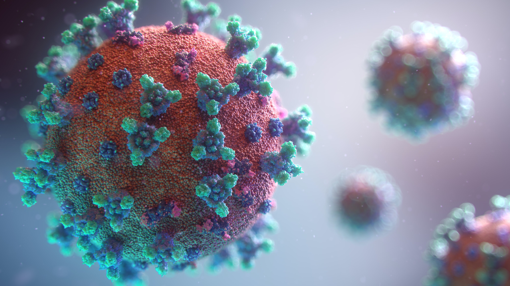

Covid - 19
Kenali virus Covid - 19
Pandemi Covid-19 masih jauh dari selesai, hingga saat ini hampir 175 juta orang di seluruh dunia telah terinfeksi Covid-19 dan lebih dari 3,7 juta telah kehilangan nyawa.
Virus Corona atau Severe Acute Respiratory Syndrome Coronavirus 2 (SARS-CoV-2) adalah kumpulan virus yang menyerang sistem pernapasan. Penyakit yang disebabkan infeksi virus ini disebut COVID-19. Karenanya, infeksi virus Corona disebut juga infeksi COVID-19.
Virus Corona atau COVID-19 ini merupakan jenis baru dari coronavirus yang menular ke manusia. Virus ini bisa menyerang siapa saja, bayi, anak-anak, orang dewasa, lansia, ibu hamil, maupun ibu menyusui.
Infeksi COVID-19 pertama kali ditemukan di kota Wuhan, Cina, akhir Desember 2019. Virus ini menular dengan cepat dan menyebar ke wilayah lain di Cina dan sebagian besar negara di dunia ini, termasuk Indonesia.
Hal ini membuat beberapa negara menerapkan kebijakan lockdown untuk mencegah penyebarannya.
Penyebab
Infeksi virus Corona atau COVID-19 disebabkan oleh coronavirus, yaitu kelompok virus yang menginfeksi sistem pernapasan. Pada banyak kasus, virus ini hanya menyebabkan infeksi pernapasan ringan, seperti flu. Namun, virus ini juga bisa menyebabkan infeksi pernapasan berat, seperti infeksi paru-paru (pneumonia), Middle-East Respiratory Syndrome (MERS), Severe Acute Respiratory Syndrome (SARS), bahkan bisa menimbulkan kematian. Ada dugaan, virus Corona awalnya ditularkan dari hewan ke manusia. Tapi kemudian diketahui bahwa virus Corona juga menular dari manusia ke manusia. Seseorang bisa tertular COVID-19 melalui berbagai cara, di antaranya:Tidak sengaja menghirup percikan ludah (droplet) yang keluar saat penderita COVID-19 batuk atau bersin. Memegang mulut, hidung atau mata tanpa mencuci tangan terlebih dulu setelah menyentuh benda yang terkena cipratan ludah penderita COVID-19. Kontak jarak dekat dengan penderita COVID-19, misalnya bersentuhan atau berjabat tangan. Virus Covid-19 dapat menginfeksi siapa saja. Efeknya akan lebih berbahaya bahkan fatal, jika terjadi pada lanjut usia, ibu hamil, orang yang memiliki penyakita tertentu (komorbid), perokok, atau orang yang daya tahan tubuhnya lemah.
Gejala
Gejala Coronavirus bervariasi, mulai dari flu biasa hingga gangguan pernapasan berat menyerupai pneumonia. Gejala Corona yang umum dialami mereka yang mengalami infeksi coronavirus adalah :Gejala virus corona tersebut dapat bertambah parah secara cepat dan menyebabkan gagal napas hingga kematian. Centers for Disease Control and Prevention (CDC) gejala infeksi virus 2019-nCoV dapat muncul mulai dua hari hingga 14 hari setelah terpapar virus tersebut.Demam tinggi disertai menggigil Batuk kering Pilek Hidung berair dan bersin-bersin Nyeri tenggorokan Sesak napas